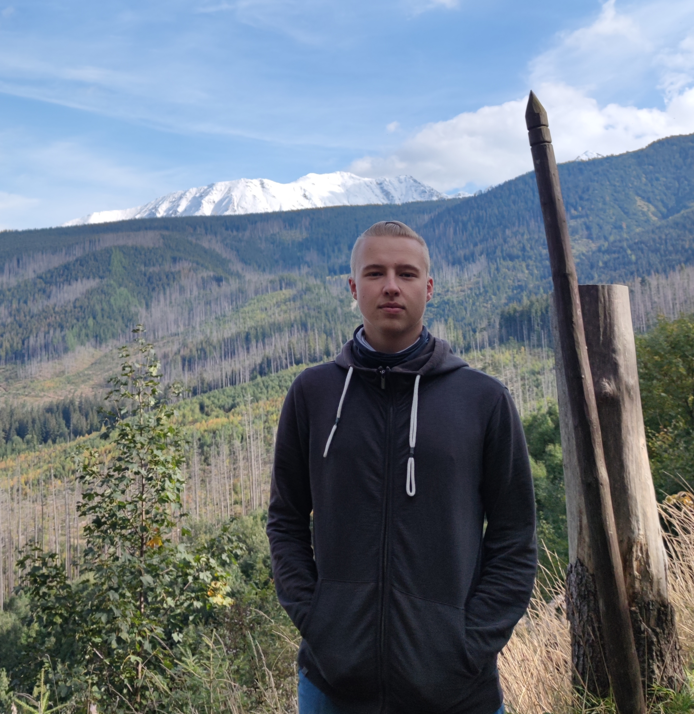

To ja
"Live free or die"
~ Generał John Stark
Coś o mnie
Nazywam się Kacper Wojda. W tym roku skończyłem (wreszcie) technikum i zdecydowałem się na ten kurs, aby poszerzyć swoje kompetencje. Profil informatyka oferuje niewiele w ramach webdevu, więc trzeba znaleźć inny sposób na rozwój.
Pasjonuję się także militariami, grami wideo, TTRPG-ami i muzyką. Uczę się wokalu oraz gry na gitarze i ukulele.